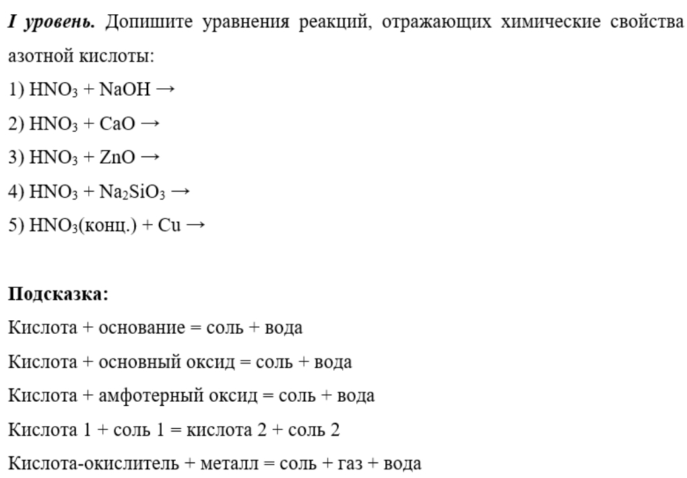
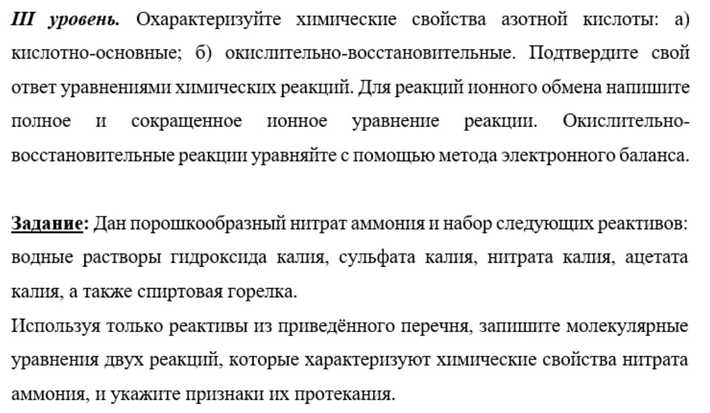
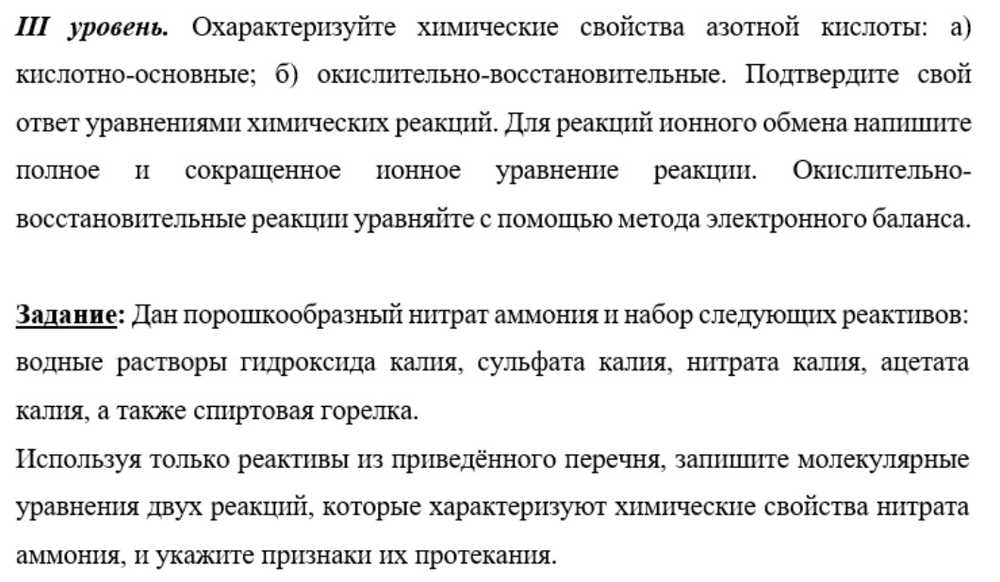
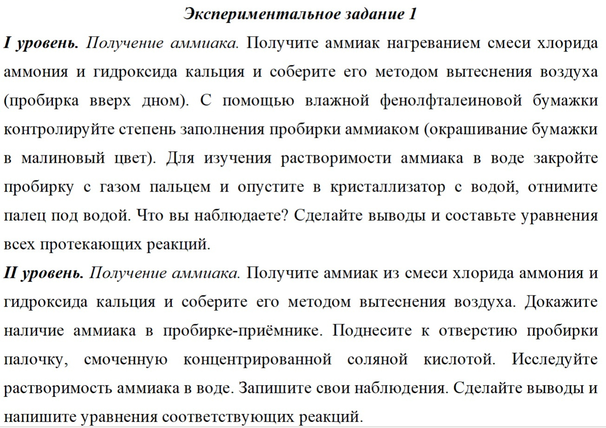
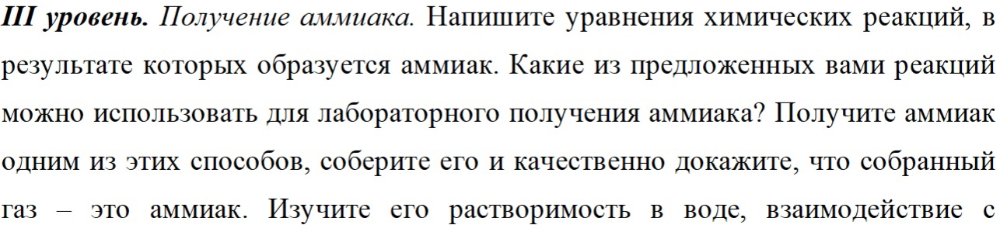
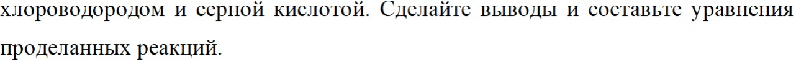
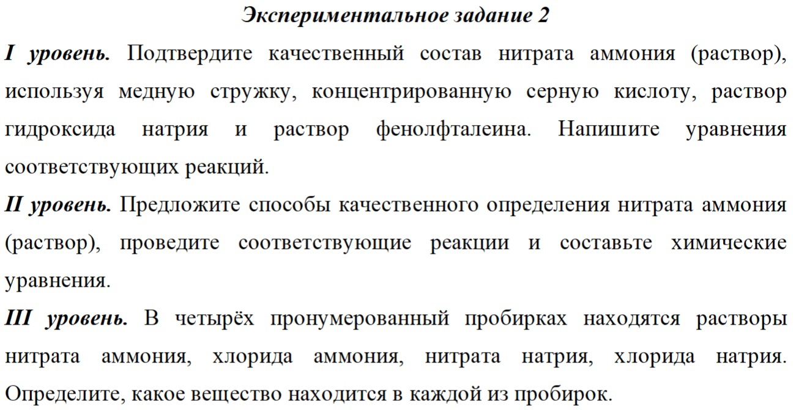

Диагностическая работа
Самостоятельная работа
 

Домашняя работа
I уровень
1. Электронная формула +Z )2 )8 )5 принадлежит атому
1) азота 2) фосфора 3) кремния 4) серы
2. Вещество, в котором азот имеет степень окисления +3
1) N2O5 2) HNO2 3) NH3 4) NO
3. Азотная кислота может взаимодействовать с каждым веществом из группы:
1) CaO, CO2 2) MgO, Fe(OH)3
3) H2SO4, K2CO3 4) NaNO3, Ca
4. При взаимодействии азотной кислоты с металлами не образуется:
1) соль 2) вода 3) водород 4) оксиды азота
5. Газ с резким запахом, который при растворении в воде образует щелочную среду, это:
1) NO 2) NH2 3) NO2 4) N2O5
6. Превращения NH4Cl→ NH3→ NO → NO2 можно осуществить, последовательно используя вещества:
1) H2O, O2, H2O 2) NaOH, O2, O2 3) AgNO3, H2O, O2 4) Ca(OH)2, HNO3, O2
7. Фосфор в промышленности получают согласно уравнению:
Ca3(PO4)2 + C + SiO2 → CaSiO2 + CO + P
Расставьте коэффициенты методом электронного баланса и определите массу фосфора, которую можно получить из минерала фосфорита, массой 46,5 кг, содержащего 30% фосфата кальция.
II уровень
1. Электронная формула внешнего энергетического уровня атома фосфора соответствует электронной конфигурации:
1) 3s23p2 2) 3s23p3 3) 3s23p4 4) 3s23p5.
2. Вещества, в которых азот имеет степени окисления -3, +2, +5, расположены в ряду:
1) N2O3, NO2, N2O5 2) HNO2, NO, HNO3
3) NH3, NO, KNO3 4) NCl3, NO, KNO2
3. Азотная кислота может взаимодействовать с каждым веществом из группы:
1) CaO, CO2, NaOH, Zn 2) MgO, Fe(OH)3, Cu, Na2CO3
3) H2SO4, K2CO3, KOH, Fe 4) NaNO3 , CaCO3, Ca, CaO
4. Взаимодействие медной стружки с концентрированной азотной кислотой приводит к образованию газа:
1) NO2 2) NO 3) N2O 4) NH3
5. Газ, образующий при растворении в воде кислую среду, это:
1) NO 2) NH3 3) NO2 4) N2O5
6. Составьте уравнения реакций согласно схеме превращений:
KNO3 →HNO3 → Cu(NO3)2 → NO2 → HNO3 → NaNO3
7. Сколько граммов 96% азотной кислоты потребуется для полного растворения 128 г меди?
III уровень
1. Электронная формула внешнего энергетического уровня иона P-3 соответствует электронной конфигурации:
1) ns2np3 2) ns2np4 3) ns2np5 4) ns2np6
2. Установите соответствие между схемой превращения и изменение степени окисления окислителя в ней:
Схема превращения
А) P + HNO3(разб.) → H2O + H3PO4 + NO
Б) S + HNO3(конц) → H2SO4 + NO2 + H2O
В) O2 + PH3 → H2O + P2O5
Изменение степени окисления окислителя
1) Э+5 → Э+4
2) Э+3 → Э+5
3) Э+5 → Э+2
4) Э0 → Э+6
5) Э0 → Э-2
3. Оксид фосфора (V) и оксид азота (V) реагируют с каждым веществом из группы:
1) NaOH, NaCl, Na2CO3 2) CaO, KOH, H2O
3) Ca(OH)2, CuO, HCl 4) H2O, ZnO, CO2
4. Азотную кислоту хранят в склянках из темного стекла, поскольку при действии солнечного света, она разлагается с образованием:
1) NH3 и O2 2) NO и NO2 3) NO2 и О2 4) NO2 и N2O
5. Газ, который при растворении в воде окрашивает лакмус в красный цвет, это:
1) NO 2) NH3 3) NO2 4) N2O5
6. Составить уравнения химических реакций, соответствующих изменению степени окисления азота
1) NO 2) NH3 3) NO2 4) N2O5
7. Вычислите массу 55%-ного раствора азотной кислоты, образующейся из оксида азота (IV) массой 1 кг, если выход кислоты составляет 98% от теоретически возможного.
Практическая работа
   Задание 1. На конкретных примерах раскройте возможность проявления азотом валентности III и IV. Дайте аргументированный ответ. Составьте необходимые схемы.
Задание 2. На примере реакции с медью сравните окислительные свойства разбавленного и концентрированного растворов азотной кислоты. Приведите два химических уравнения с электронным балансом, укажите окислитель, восстановитель, процессы окисления и восстановления. Опишите признаки реакций.
Задание 3. Как доказать, что в выданной вам пробирке находится раствор сульфата аммония, имея в своём распоряжении растворы азотной кислоты, гидроксида натрия, нитрата бария и фенолфталеина? Приведите уравнения реакций в молекулярной и ионной форме, опишите признаки реакций.
Задание 4. Сколько граммов фосфорита, содержащего 80% ортофосфата кальция, нужно растворить в избытке азотной кислоты, чтобы получить 39,2 г ортофосфорной кислоты?